DADA2026:4-2
Defence against the Dark Arts
Fourth topic - Cryptography 2 [H5]
Hugh Anderson [Q]
July, 2026
The Tortoise and the Hare(Pollard rho? Floyd?)
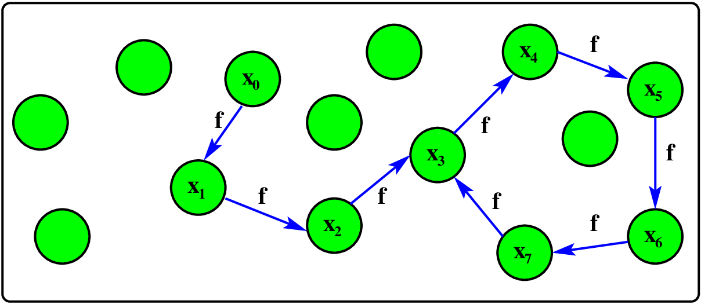
Where are we?
- Introduction (in May):
-
Warfare, with an indistinct enemy.
- Social Engineering (in May):
-
Examples - phishing, vishing, tricking. Human weaknesses.
- System Complexity:
-
Fight back with design principles, standards and formal methods.
- Crypto 1:
-
Traditional systems - substitution and permutation. (Pre 1976).
- Crypto 2:
-
We will continue with cryptography, moving on to asymmetric systems. These systems, combined with modern cryptographic symmetric systems make up the bulk of all encryption based security used on the Internet. We will also look at some of the limitations of those systems. We will look at hash functions, and attacks on them.
Outline
- From Symmetric to
Asymmetric...
- Building blocks
- Three asymmetric systems: Diffie-Hellman, RSA and ECC
- Hash
functions
- Cryptographic hash functions
- Reversing a hash - the beautiful rainbow table
- Finding a hash collision - the birthday attack
From Symmetric to Asymmetric...
Outline
- From Symmetric to
Asymmetric...
- Building blocks
- Three asymmetric systems: Diffie-Hellman, RSA and ECC
- Hash functions
- Cryptographic hash functions
- Reversing a hash - the beautiful rainbow table
- Finding a hash collision - the birthday attack
Symmetric key systems
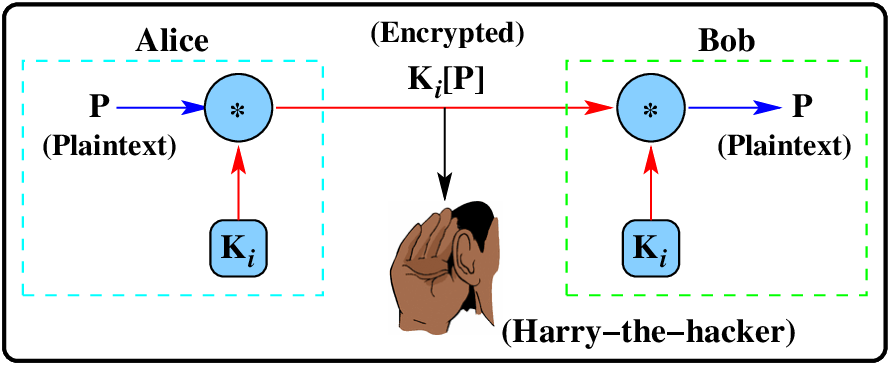
In this scenario, the key must be distributed to everyone who needs to use it.
Asymmetric key systems
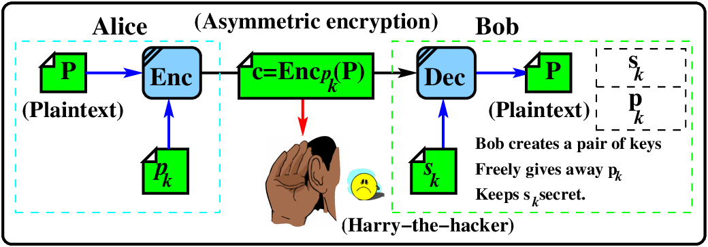
p_{k} is the public key for Bob, s_{k} is his private key. Only Bob can decrypt a message sent to him, but anyone can encrypt it.
Participants each have private and public keys, and the keys cannot be derived from each other.
Asymmetric encryption and authentication
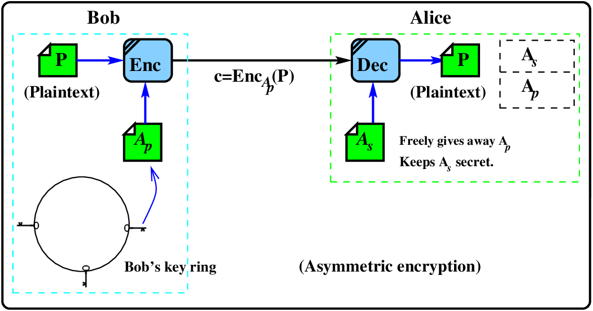 |
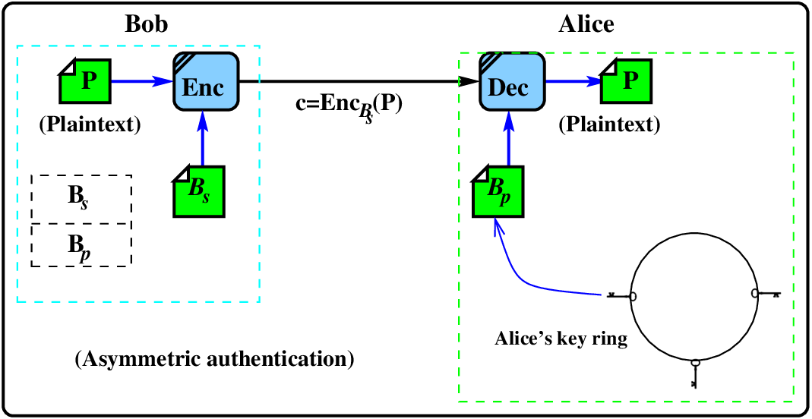 |
To the left we see Bob encrypting a message to Alice, using Alice’s public key. which he keeps on a key ring. Only Alice can decrypt it.
To the right we see Bob sending a message that only he could have sent. He uses his own secret key. Anyone can decrypt it, but only Bob could have sent it.
Doing both encryption and authentication...
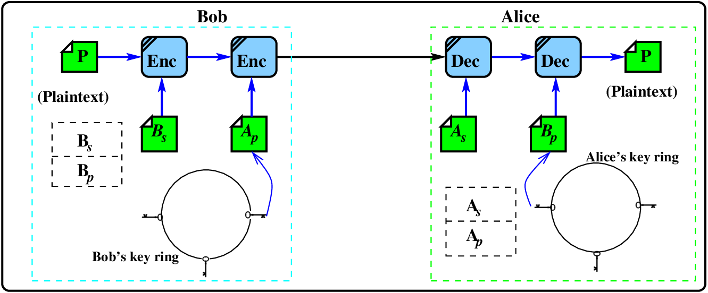 |
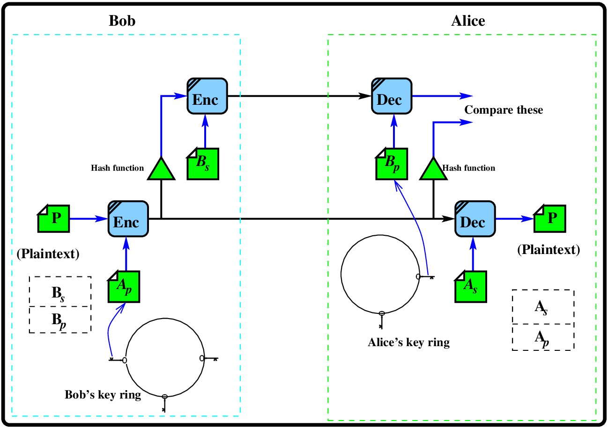 |
The technique at the left involves two asymmetric encryptions, and is considered too slow. Instead we hash the encrypted message and encrypt that (much smaller, so faster) hash, to append as a signature for the message.
This is what a digital signature is, an encrypted hash, of a file or something. The originator uses their secret key, and anyone who knows the matching public key can check it against the hash of the file.
Man-in-the-middle for Public Keys
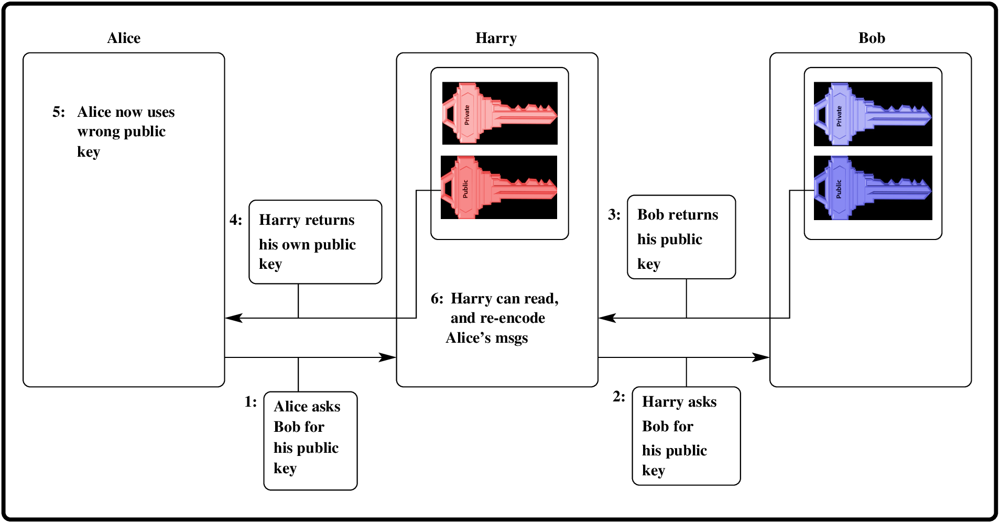
We see that a man-in-the-middle can return a bad (public) key to Alice, who incorrectly assumes it is from Bob. From then on she encrypts using a key that Harry made, and who also has the matching secret key.
Outline
- From Symmetric to
Asymmetric...
- Building blocks
- Three asymmetric systems: Diffie-Hellman, RSA and ECC
- Hash functions
- Cryptographic hash functions
- Reversing a hash - the beautiful rainbow table
- Finding a hash collision - the birthday attack
The construction for Diffie-Hellman KA
Alice and Bob pre-determine a choice of p, and a generator g. The protocol is:
- Alice, Bob choose uniform values a,b from \mathbb{Z}_{p}^{*} and exchange h_{A}=g^{a}\bmod p, h_{B}=g^{b}\bmod p.
- Alice computes the secret:
k_{A}=(g^{b}\bmod p)^{a}\bmod p=(g^{b})^{a}\bmod p
- Bob computes the secret:
k_{B}=(g^{a}\bmod p)^{b}\bmod p=(g^{a})^{b}\bmod p
k_{A}=k_{B}=(g^{b})^{a}\bmod p=(g^{a})^{b}\bmod p=g^{ab}\bmod p
Alice and Bob pre-determine the choice of group {\cal G} and a generator g. The protocol is:
- Alice, Bob choose uniform values a,b from {\cal G} and exchange h_{a}=g^{a}, h_{b}=g^{b}.
- Alice computes the secret:k_{A}=h_{b}^{a}
- Bob computes the secret:k_{B}=h_{a}^{b}
Note that k_{A}=k_{B}=g^{ab}. A common choice of group (as above) is {\cal G}=\mathbb{Z}_{p}^{*}.
The OWF (One Way Function) - hard and easy - problem
| Bit size | Forward | Reverse: Discrete logarithm solution |
|---|---|---|
| 10 | 10 | 23 |
| 100 | 100 | 1,386,282 |
| 1,000 | 1,000 | 612,700,000,000,000,000,000,000 |
1000 bit maths involves numbers with more than 300 decimal digits, but the C “int” (for example) has only 10 or so digits. As a result we need big number libraries. Even with those, to calculate g^{b}\bmod p where g,b and p are large could be very slow, and we need some math tricks.
A couple of relevant questions would be
- Why do we use primes?
- What is the relevance of Fermat’s little theorem?
#2: RSA Encryption
RSA (Ron Rivest, Adi Shamir and Leonard Adleman) is a public key system which exploits the difficult problem of trying to find the complete factorization of a large composite integer whose prime factors are not known.
RSA can be used for encryption, digital signatures, and even key exchange.
The factorization problem [i3,i5]
2140324650240744961264423072839333563008614715144755017797754920881418023447
1401366433455190958046796109928518724709145876873962619215573630474547705208
0511905649310668769159001975940569345745223058932597669747168173806936489469
9871578494975937497937
=
6413528947707158027879019017057738908482501474294344720811685963202453234463
0238623598752668347708737661925585694639798853367 {*}
3337202759497815655622601060535511422794076034476755466678452098702384172921
0037080257448673296881877565718986258036932062711A straightforward factorization algorithm would take {\cal O}(N^{\frac{1}{2}}) time, trying all numbers up to the square root of N. There are many approaches to factorization: see the link [i5] above.
Very few RSA-challenge messages (see [i3] above) have been cracked, and these efforts each only cracked a single RSA key. The current largest keysize that has been cracked had 829 bits (RSA-250), and was factored in Feb 2020.
4 processes for public key p_{k} and private key s_{k}
- Select two large primes P and Q. Assign x=(P-1)(Q-1).
- Choose E relative prime to x. Assign N=P*Q. Then:.
{p_{k}\mathrm{~is~}\left\langle N,E\right\rangle }
{s_{k}\mathrm{~is~}\left\langle N,D\right\rangle }
{c=m^{E}\bmod N}
{m=c^{D}\bmod N}
#3: ECC Encryption
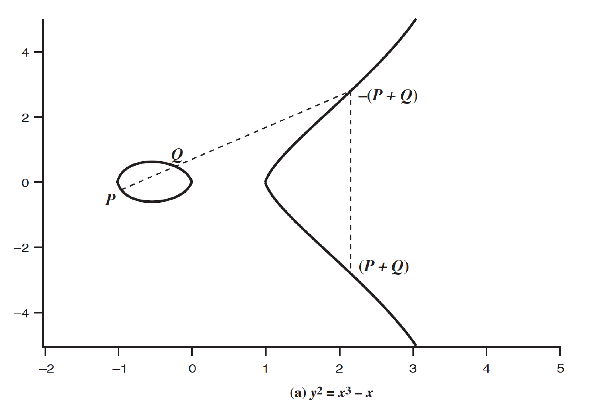 |
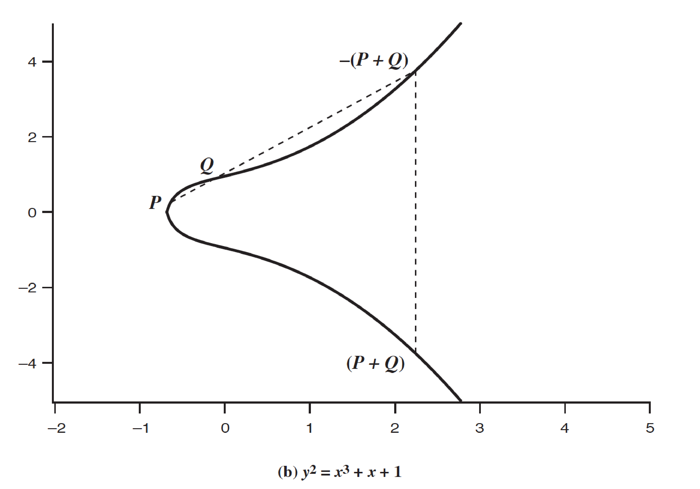 |
 |
y^{2}=x^{3}+ax+b, with zero O, and the points E(a,b)=\{(x_{0},y_{0}),(x_{1},y_{1}),\ldots\} on the curve. The elements are points on a plane not on a number line.
An addition operation +_{E(a,b)} for points on this curve: the sum of P+_{E(a,b)}Q is reflection of the intersection R. The group is \left\langle +_{E(a,b)},E(a,b)\right\rangle.
ECC uses curves whose elements are finite: prime curves E_{p}(a,b) defined over \mathbb{Z}_{p}, and binary curves E_{2^{m}}(a,b) defined over GF(2^{m}). See the image to the right.
Algorithms for ECC cryptography
- Using an elliptic group E_{p}(a,b), select a point G on the curve which has a large order n. The order of a point is the smallest value n such that n\times G=0.
- Choose n_{A}:\,n_{A}<n..
{s_{k}\mathrm{~is~}\left\langle n_{A},E_{p}(a,b),G\right\rangle }
{p_{k}\mathrm{~is~}\left\langle P_{A},E_{p}(a,b),G\right\rangle }
{C=\left\langle c_{1},c_{2}\right\rangle =\left\langle k\times G,m+k\times P_{A}\right\rangle }
{\mathrm{~Calculate~}m=c_{2}-c_{1}\times n_{A}}
Why use ECC?
ECC addition is an analog of modulo multiply, so repeated addition is like modulo exponentiation.
We have a “hard” problem, equivalent to the discrete log problem. Consider Q=kP, where Q,P belong to a prime curve... it is
- “easy” to compute Q given k,P but
- “hard” to find k given Q,P.
This is known as the elliptic curve logarithm problem.
| Security | Symmetric | FFC: DSA | IFC: RSA | ECC,DH |
|---|---|---|---|---|
| 128 | AES-128 | 3072/256 | 3072 | 256 |
| 192 | AES-192 | 7680/384 | 7680 | 384 |
| 256 | AES-256 | 15360/512 | 15360 | 512 |
Best attack on ECC so far is Pollard-rho/Floyd!
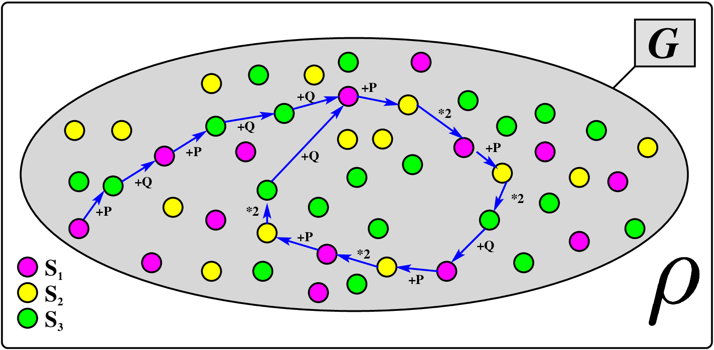
The world is a chain of elements of the group, partitioned into three (S_{1},S_{2},S_{3}) types (coloured). We either double the element, or add P or Q:
{\begin{array}{lll} P_{i+1}=f(P_{i}) & = & \left\{ \begin{array}{lll} P_{i}+P & \mathrm{if} & P_{i}\in S_{1}\\ 2P_{i} & \mathrm{if} & P_{i}\in S_{2}\\ P_{i}+Q & \mathrm{if} & P_{i}\in S_{3} \end{array}\right.\end{array}}
Each P_{i} is some sum aP+bQ. On collision, a_{1}P+b_{1}Q=a_{2}P+b_{2}Q, and
{\begin{array}{lll} \frac{a_{1}-a_{2}}{b_{2}-b_{1}}P & = & Q\end{array}}
Summary...
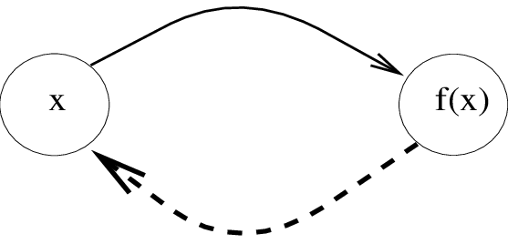
We saw three systems where we used operations that are easy to do one way, say of {\cal O}(k), and difficult to reverse and do the other way: perhaps {\cal O}(e^{k}), the one-way functions.
The Diffie-Hellman key agreement scheme relied on the difficulty of calculating discrete logs. RSA encryption relied on the difficulty of factorization, and ECC relies on the elliptic curve log problem.
In each case, we want our mathematical systems to be of fixed size (i.e. modulo), and to operate over all values. A suitable mathematical structure is to use finite cyclic groups, or fields and if you have an interest in cryptography, there is a lot to learn in this area.
Hash functions
Outline
- From Symmetric to
Asymmetric...
- Building blocks
- Three asymmetric systems: Diffie-Hellman, RSA and ECC
- Hash
functions
- Cryptographic hash functions
- Reversing a hash - the beautiful rainbow table
- Finding a hash collision - the birthday attack
Cryptographic hashes... \mathrm{hash}\neq\mathrm{encrypt}
hugh@comp:[508]$ md5sum ss.c
550114bc3cc3359e55ba33abe8983a85 ss.c
hugh@comp:[511]$ md5sum TXT/cybercom.txt
9ec4c12949a4f31474f299058ce2b22a TXT/cybercom.txtMD5 and SHA [ctrl-i4]
Was designed in 1991 by Ron Rivest (of RSA fame), as a cryptographic hash function. However it has been found to not be collision-resistant (see [i4] above), and so, despite extensive use in industry today, it should no longer be used as a cryptographic hash.
Originally designed by NIST in 1993 (SHA-0) but revised in 1995 as SHA-1. Revisions in 2002 led to SHA-2 256/384/512: higher security levels, and with no known weaknesses. SHA-3 was released in 2012 - it is the newest one, with some different design elements.
| SHA-1 | SHA-224 | SHA-256 | SHA-384 | SHA-512 | |
|---|---|---|---|---|---|
| Digest (hash) size (bits) | 160 | 224 | 256 | 384 | 512 |
| Message size | <2^{64} | <2^{64} | <2^{64} | <2^{128} | <2^{128} |
| Block size (bits) | 512 | 512 | 512 | 1024 | 1024 |
| Number of steps | 80 | 64 | 64 | 80 | 80 |
Cryptographic hashes
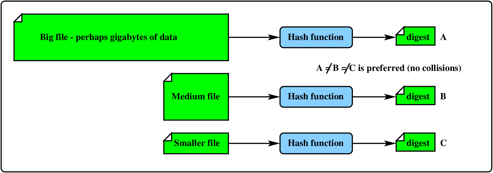
A cryptographic hash meets extra security requirements. In particular, we want them to be collision resistant (defined on next slide).
A cryptographic hash is an important crypto primitive. It is used in digital signatures : hash-and-sign, protecting password files (with salted hashes), Commitment schemes, Proof-of-Work in Bitcoin, IPV6 cryptographic addresses, and so on.
Properties of cryptographic hash functions
- It should be computationally infeasible to find two items x,x' where x\neq x', but both map to y={\cal H}(x)={\cal H}(x') (collision-resistant ).
- Given x, it should be computationally infeasible to find an x'\neq x such that {\cal H}(x')={\cal H}(x) (target-collision, or second pre-image resistant ).
- Given y, it should be computationally infeasible to find item x mapping to it: y={\cal H}(x) (one-way property, or pre-image resistant ).
Note that (1) implies (2), and also a (2) attack implies a (1) attack.
- Can there be no collisions at all? If the number of messages \#m is greater than the number of hashes \#{\cal H}(\ldots), we have the pigeonhole principle - if there are n roosts for n+1 pigeons...
- How likely are collisions? Consider the birthday paradox1. What is the probability that at least two of N randomly selected people have the same birthday? It is much more likely than you would suspect...
Outline
- From Symmetric to
Asymmetric...
- Building blocks
- Three asymmetric systems: Diffie-Hellman, RSA and ECC
- Hash
functions
- Cryptographic hash functions
- Reversing a hash - the beautiful rainbow table
- Finding a hash collision - the birthday attack
Reversing a hashed password by brute force or dictionary?
Time-memory tradeoff (\sqrt{T},\sqrt{M}) tables...
Idea #1: Precompute chains of values starting from a password guess, and using alternately, a hash function {\cal H}(p), and a reducing function R(h), which generates a predictable plausible guess from the hash. Only store the first and last entries from the chain. It is space efficient, and you can re-compute the intermediate values (a space-time tradeoff). |
’ 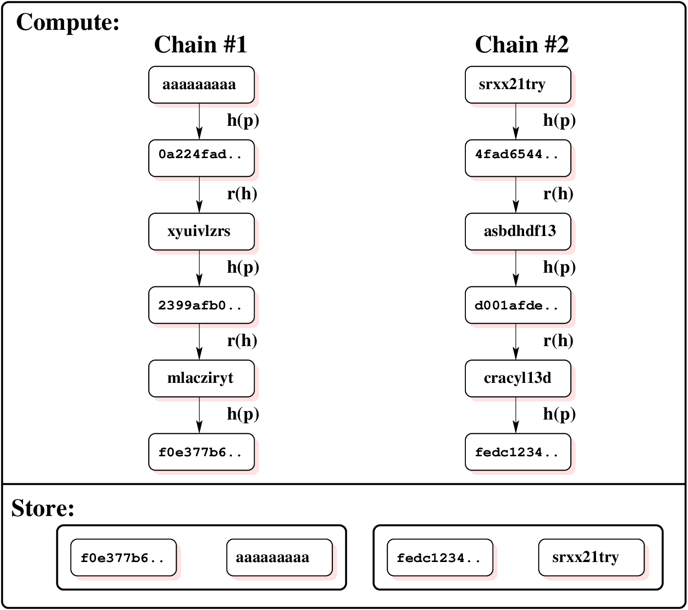 |
Reversing the hash
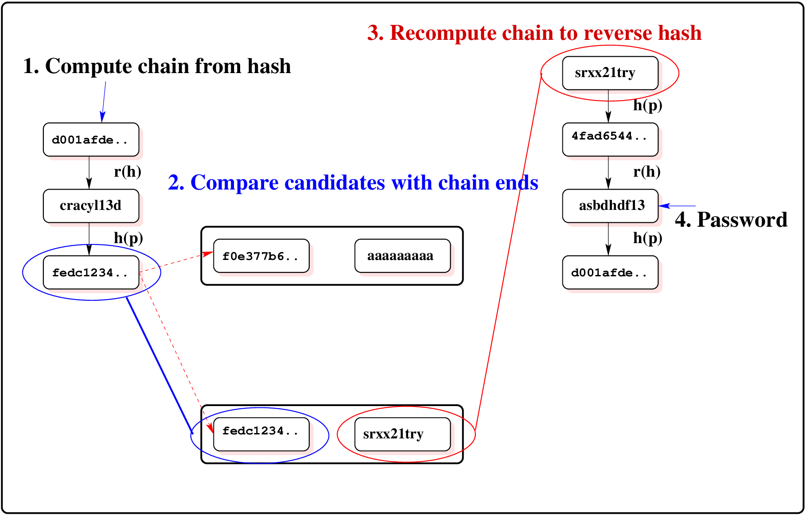
There is a problem in that collisions may happen frequently...
Suppose there are k reduce operations and k hash operations in the chain, instead of using the same function R() in all the reduce operations, the Rainbow table uses k different functions. The first reduce is R_{1}(), followed by R_{2}() and so on.
Reversing an old Windows password hash
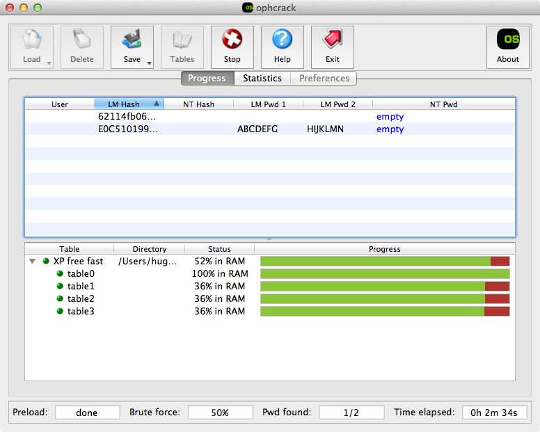
This technique can be applied to a known plaintext attack on an encryption scheme where the keyspace is small. (how?)
Outline
- From Symmetric to
Asymmetric...
- Building blocks
- Three asymmetric systems: Diffie-Hellman, RSA and ECC
- Hash
functions
- Cryptographic hash functions
- Reversing a hash - the beautiful rainbow table
- Finding a hash collision - the birthday attack
The Birthday “Paradox” is not a paradox
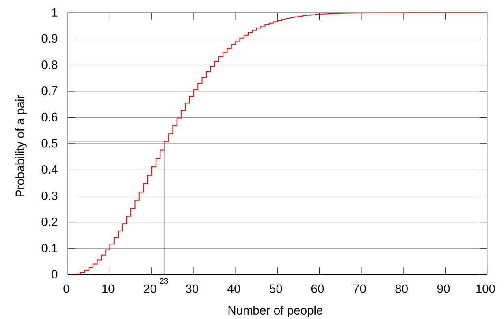 |
It is NOT the likelihood that someone shares a specific person’s birthday. It is the likelihood that amongst every pair of candidates there will be (at least) one matching pair. This turns out to be quite likely - even here: for N=23, this likelihood is about 0.5. We can attack some digital signatures using an attack based on the birthday paradox. |
In general, in a birthday attack over n items, to achieve a probability of p, we should choose about \sqrt{2n\ln\frac{1}{1-p}} items. In the above, for n=365,p=0.5 we have about 1.177\sqrt{365}\thickapprox22.5. This value (1.177) gives rise to the common approximation we use: take the square root2.
The birthday attack - straightforward method
The birthday attack can be used to speedup the search for a hash collision with a “square-root” reduction.
Suppose a digest is n bits, and we have a random set of around 2^{\frac{n}{2}} messages (by the birthday attack, the chance of having a collision is around 0.5 probability). A straightforward implementation of a birthday attack stores this set in the memory and then searches for a collision. However, in practice, the memory requirement is more difficult to meet compared to the running time requirement. Imagine if n=80 bits, then there are 2^{40} pairs of messages and digests. Assuming each pair take up 32 bytes, then the total storage is 2^{45} bytes, i.e. 32 TB. Nevertheless, 2^{40} hash operations can be done in reasonable time.
The following improved birthday attack takes about twice the time, compared to the straightforward implementation, but uses constant memory.
Floyd - for chains like x_{0}\rightarrow f(x_{0})\rightarrow f(f(x_{0}))\rightarrow\ldots
(Robert W.) Floyd’s cycle-detection algorithm: the Tortoise t and the Hare h. Variables hop through a graph at different rates, stopping when they collide.
def H(x):
return md5(x.encode('utf-8')).hexdigest()
def f(x):
return H(x)[:10]
def floyd(x0):
t = f(x0)
h = f(f(x0))
print('Find the loop')
while (t != h):
t = f(t)
h = f(f(h))Floyd - for chains like x_{0}\rightarrow f(x_{0})\rightarrow f(f(x_{0}))\rightarrow\ldots
t = x0
print('Find the collision')
while (t != h):
if (f(t) == f(h)):
break
t = f(t)
h = f(h)
if (t != h):
temp_t = t
temp_h = h
pass
return temp_t,temp_hThis reruns, but just one step at a time. The tortoise restarts at the beginning, and the hare at the result of part 1. They meet at the beginning of the loop (where the collision is).
Finding a collision with floyd.py
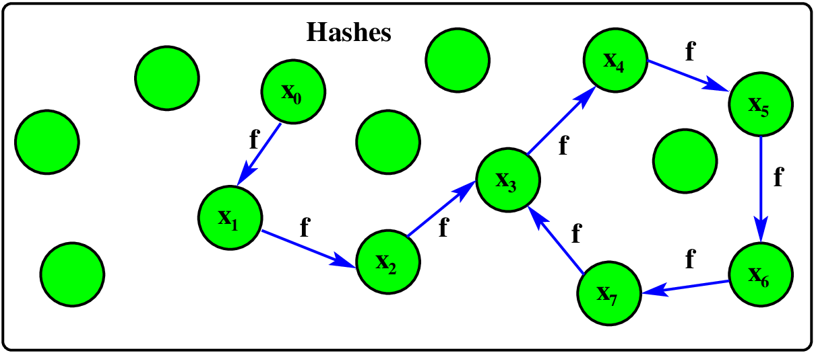
hugh@comp % \textbf{python3 floyd.py 42}
Find the loop
Find the collision
Tortoise f375526901 > cfd1d92d5b 1d0fcae405b61165d261ed
Hare 0eecccc477 > cfd1d92d5b f0b71d1655bc12981bd608
hugh@comp % \textbf{md5 -s f375526901}
MD5 (\textquotedbl f375526901\textquotedbl ) = cfd1d92d5b 1d0fcae405b61165d261ed
hugh@comp % \textbf{md5 -s 0eecccc477}
MD5 (\textquotedbl 0eecccc477\textquotedbl ) = cfd1d92d5b f0b71d1655bc12981bd608
hugh@comp %Note that we are only matching the first 10 hex digits of the digest.
Practical use in a message/digest collision attack
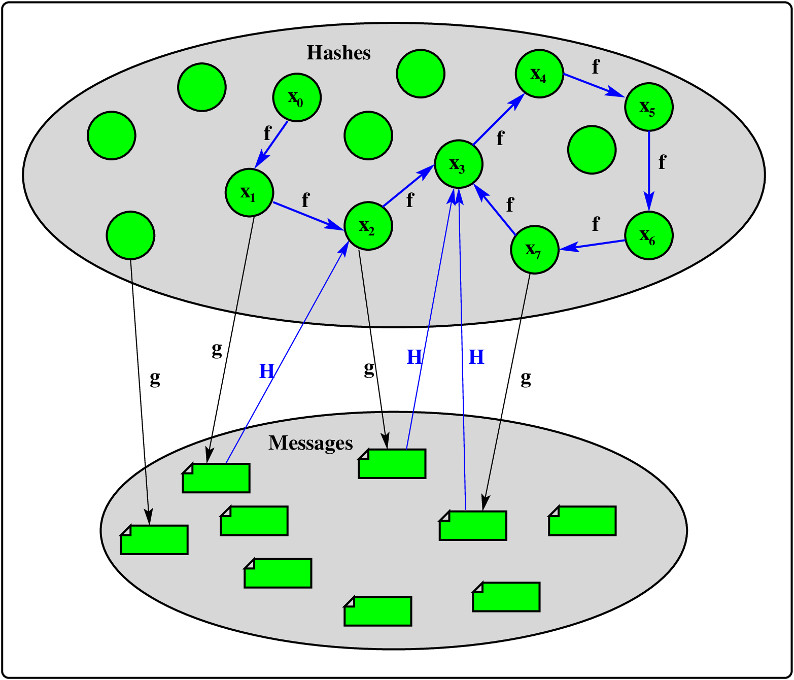
Consider messages m\in M, digests h\in H, the functions g:H\rightarrow M, and f:H\rightarrow H defined as f(x)\mathrel{\overset{\textsf{def}}{=}}{\cal H}(g(x)). The elements in the chain/trail of digests are mapped to the messages. Here is an example with good, and bad messages about Bob:
\begin{array}{lll} g(0000) & = & \mathrm{Bob~is~a~good~and~honest~worker.}\\ g(0001) & = & \mathrm{Bob~is~a~difficult~and....} \end{array}
Code changes for the collision attack
G = [m1,m2,m3...]
def g(x):
return G[int(x[:4],base=16)]
def f(x):
return H(g(x))[:4]This code only matches the first 4 hex digits of the digest:
hugh@comp % \textbf{python3 floydfile4.py 423485}
Tortoise Lord Baltinglas... > e09c 3f2d63f7841d33fdbe0bfb4fd444
Hare Tell me more ab... > e09c 59046d3b1201931ff649d8b287e8Birthdays and hashes? All are f(x)\mathrel{\overset{\textsf{def}}{=}}{\cal H}(g(x))
| People sharing birthdays | Message digests colliding |
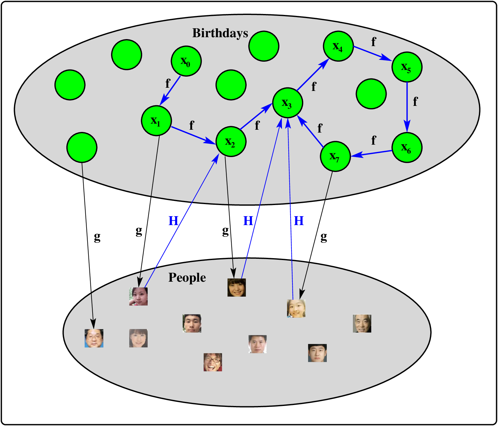 |
|
B is the set of birthdays, P the set of people. and we have:
|
H is the set of digests/hashes, M the set of message, and we have:
|
Summary: Crypto-2
An algorithm - We started off this session looking at the Tortoise and Hare algorithm for finding loops in a graph. This underlying algorithm found its way into two of this session’s topics.
Asymmetric Systems - We saw the asymmetric nature of the keys in cryptography since 1976, and how it could be used for encryption, and authentication. Rather than SPN networks, these systems are based on one-way functions. There were three examples: Diffie-Hellman key agreement, RSA encryption, and ECC encryption.
Hashes - Cryptographic hashes are central to a lot of IT security - we use them to verify passwords, to do proof-of-work (say in bitcoin), for digital signatures, and for verifying files. We looked at techniques to “reverse” a hash including the lovely Rainbow table.